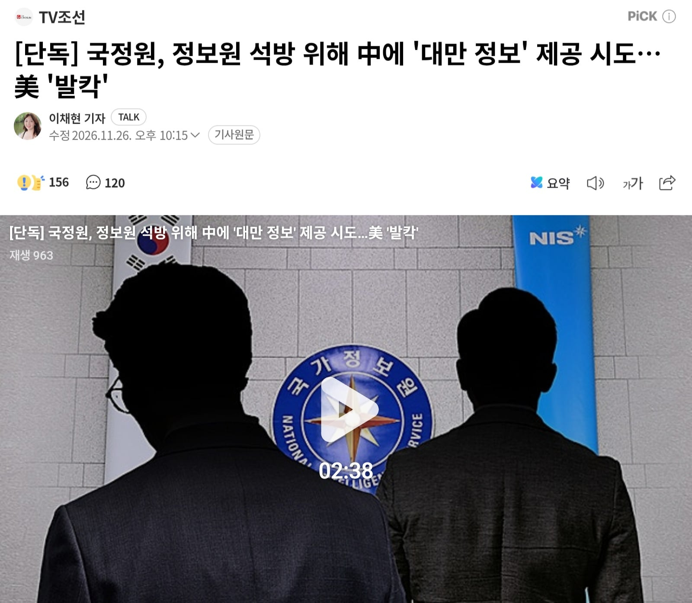

에?

에?
미국한테 안들키고 뭘 할수 있는 나라가 어딧서
뭐 어떤 모종의 거래가 오갔는지 우리가 알 일은 없겠지만 자국민 보호가 우선이 아니겠누.. 그것도 고가치 인물이라면 어쩔 수 없지
입장바꿔서 제3국이 자국민 보호를 위해서 우리나라 정보원 팔았다고 해봐. 그때도 자국민 보호를 위해 힘쓴 제3국 정부에 잘했다고 할거임?
칭찬은 못해도 이해는 할수있지
우리나라에선 심각하게 비판할 요소는 아닌 듯
다만 대만쪽에선 좀 반발이 크지 싶은데ㅋㅋ
그 군무원 시바새기 때문에 먼일이냐
국익이 우선인데 국정원 일 잘하는거 아니냐? 미국한텐 들키진 말지 아쉽다.